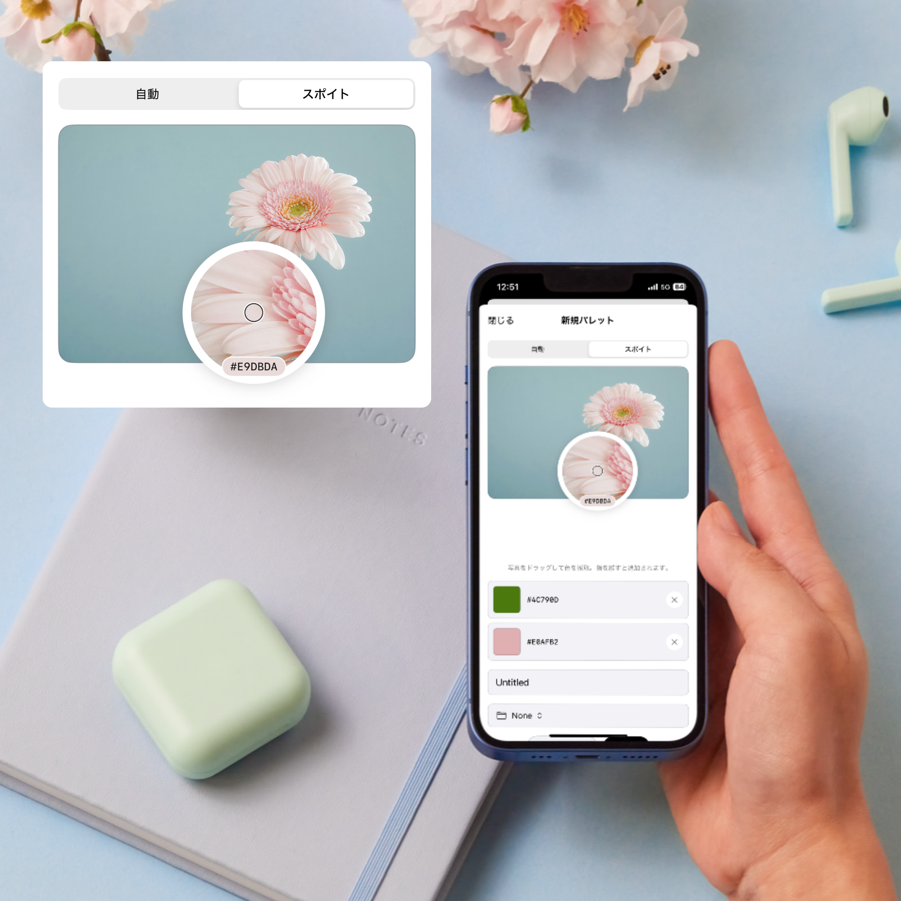
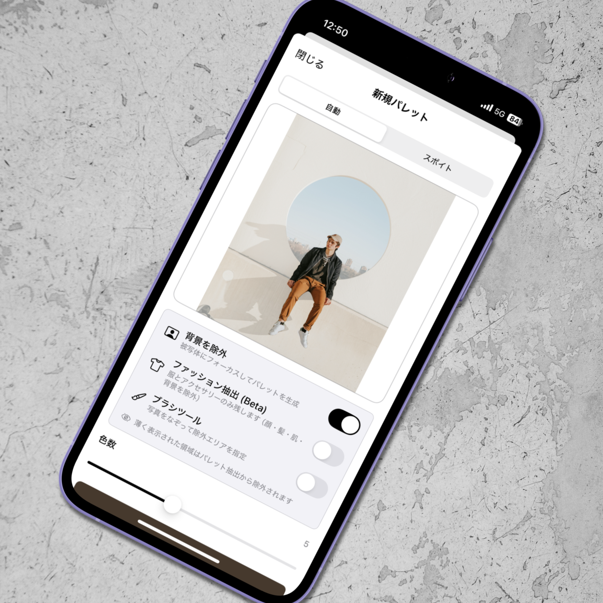

Palettly
Photo Color Palette
写真の色を、パレットに
写真からカラーパレットを作るオフラインアプリ。自動抽出とスポイトの2つの方法で、お気に入りの色をいつでも手元に。デザイナー、フォトグラファー、クリエイターのための色の記録帳。
完全オフライン
自動抽出
iPhone
iOS 17+
Photo Color Palette
写真の色を、パレットに
写真からカラーパレットを作るオフラインアプリ。自動抽出とスポイトの2つの方法で、お気に入りの色をいつでも手元に。デザイナー、フォトグラファー、クリエイターのための色の記録帳。
写真からカラーパレットを作る過程で欲しい機能が揃っています。

選んだ写真の代表色を、設定不要で瞬時にパレット化。

虫眼鏡付きスポイトで、写真の任意の場所からこだわりの色を抽出。

背景を自動で除外し、被写体の色だけを集めた純度の高いパレットに。

好みのレイアウトで画像書き出し。SNS やムードボードにそのまま使える。
k-means クラスタリングで、写真の代表色を瞬時に抽出。
お任せで瞬時に、もしくは自分の目で一色ずつ。
写真を選ぶだけで、k-means クラスタリングが代表色を3〜8色で瞬時に抽出。構図と色のバランスを読み取り、調和の取れたパレットを生成します。
虫眼鏡付きのスポイトで、写真の任意の位置から色をピック。最大8色まで選べるので、こだわりの色だけを集めたパレットを自由に構成できます。
作ったパレットを、あらゆる場所で活用できる機能。
テーマやプロジェクト別にフォルダでパレットを分類。リネームや移動もスムーズ。数が増えても迷いません。
写真にパレットを重ねた画像を複数レイアウトで生成。SNSシェアやムードボードにそのまま使えます。
書き出した画像は写真アルバムへ保存、または ShareLink から他のアプリへ直接シェアできます。
ネットワーク通信ゼロ。すべての処理が端末内で完結するので、電波が届かない場所でも安心して使えます。
個人情報の収集なし。写真もパレットもすべて端末内に保存され、外部に送信されることはありません。